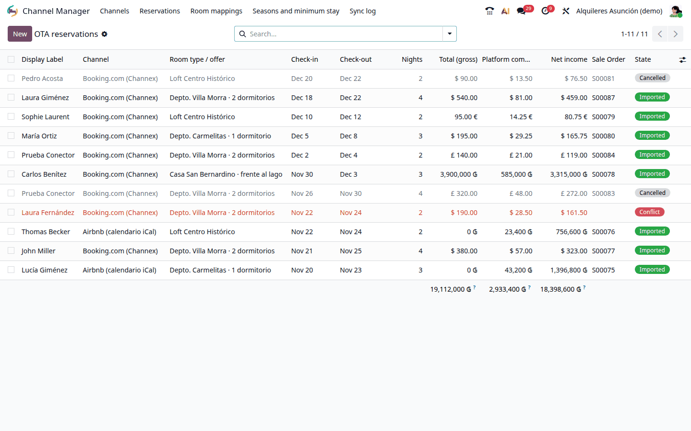
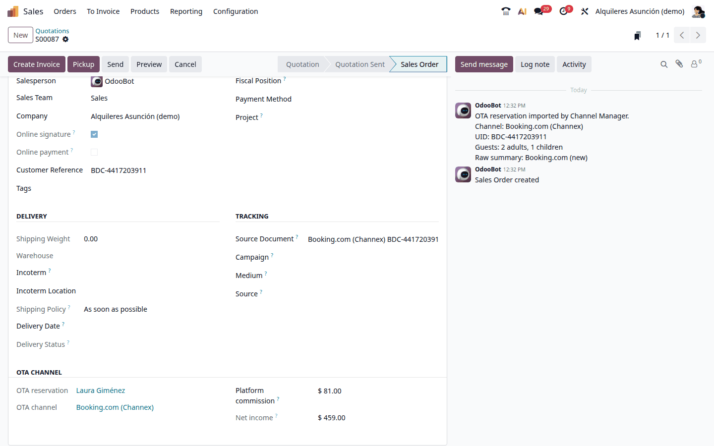
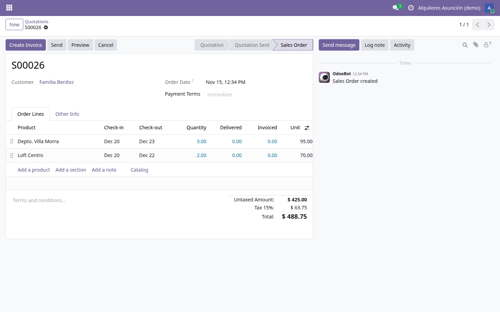
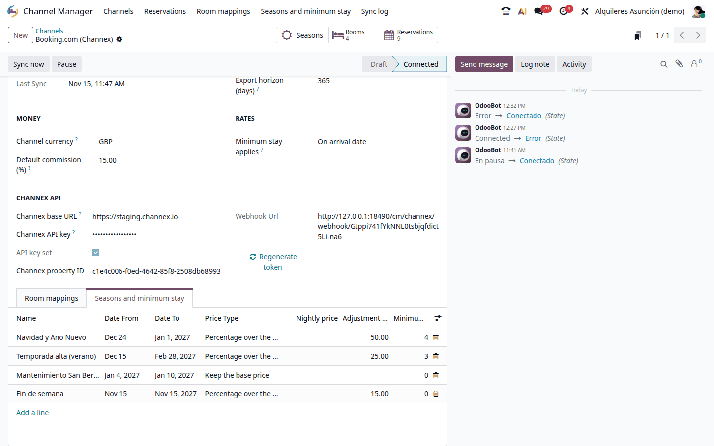
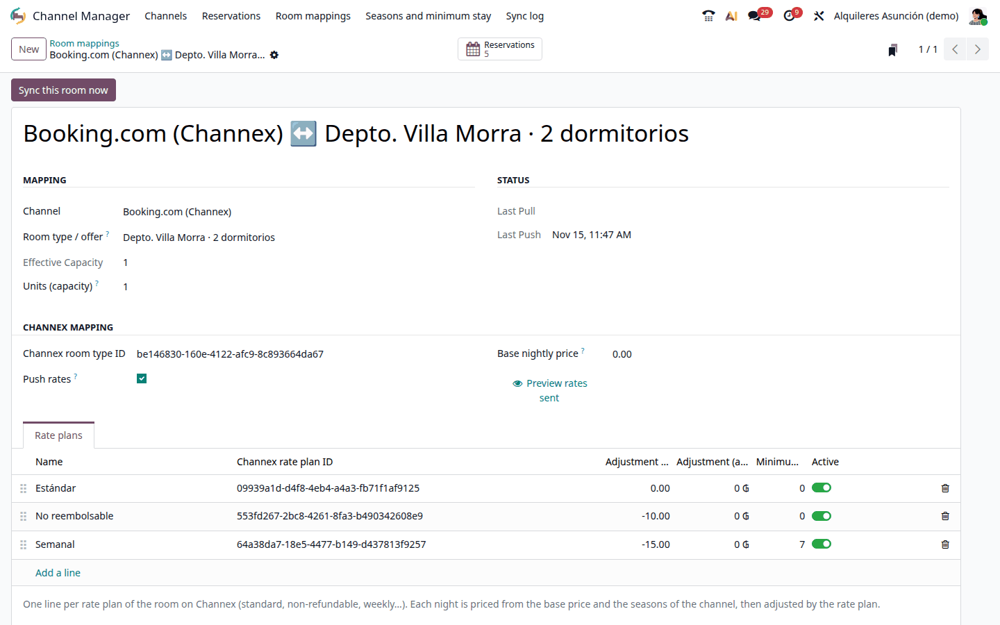
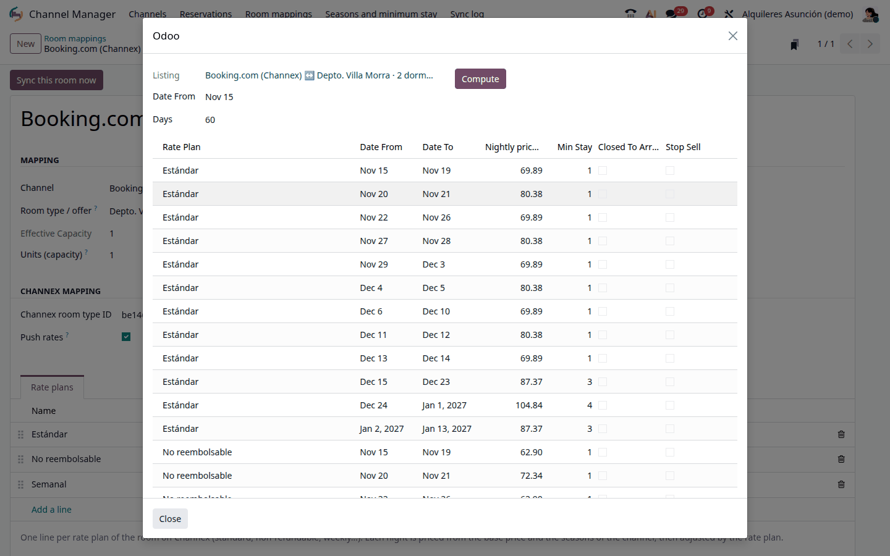
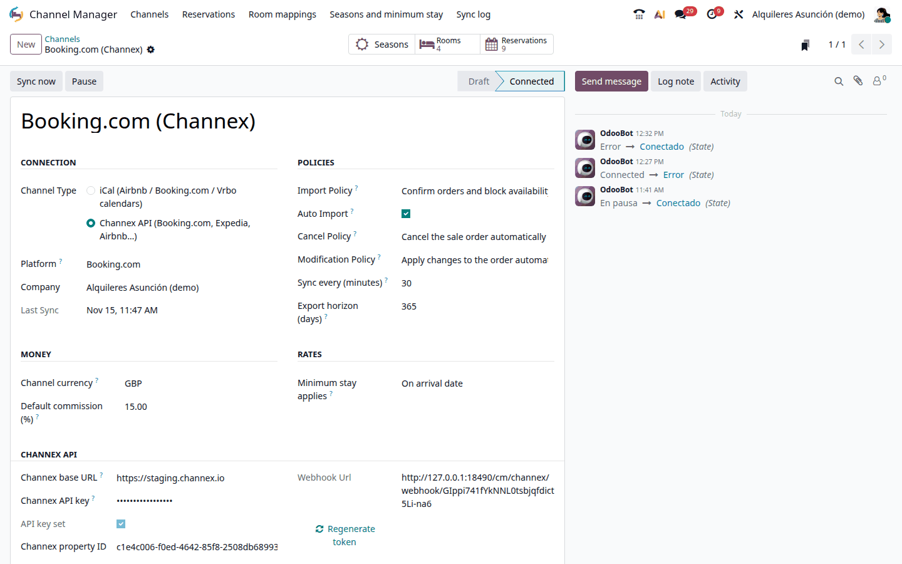
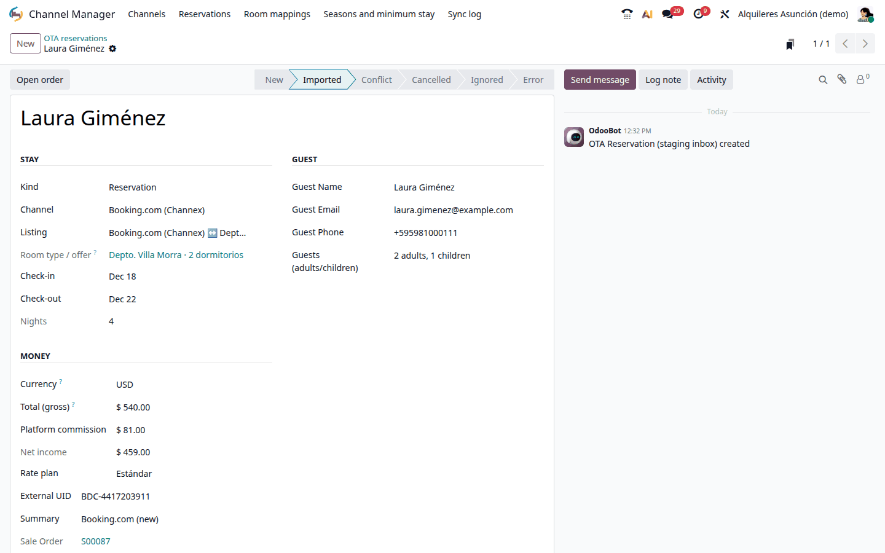

Sell your rooms and apartments on Airbnb, Booking.com, Expedia, Vrbo and 100+ channels and keep Odoo as the single source of truth — availability, rates and reservations, both ways.
Odoo Community & Enterprise Tested against a live Channex property Multi-currency & multi-company
Two-way calendar sync with any platform that supports iCal (Airbnb, Booking.com, Vrbo, Lodgify…). Publish a secure feed of your occupancy per room type and import OTA reservations automatically — no API account needed.
Through Channex.io: availability, nightly rates, minimum stay and restrictions pushed to Booking.com, Expedia, Airbnb, Agoda and 100+ channels; new, modified and cancelled bookings arrive in seconds by webhook.
A different nightly price (fixed or %) for high season, holidays or weekends; several rate plans per room (standard, non-refundable, weekly…); minimum stay, closed to arrival and stop sell — sent night by night.
Each reservation keeps the currency the guest paid in (USD, EUR, PYG…). The platform commission is stored apart, so you see gross, commission and net income on the reservation and on the sales order.
When the guest changes dates, room or price on the platform, the sales order is updated automatically (or flagged for your review), always after checking availability. Cancellations cancel the order and free the nights.
Every import checks real availability first — including the stays sold at your front desk. Conflicts land in the reservation inbox with an activity for the manager, never a silent double booking.

Reservation inbox: USD, EUR and PYG bookings with gross, platform commission and net income; a conflict waiting for review.

The sales order created from a Booking.com reservation, with its commission and net income.

Odoo Community: a front-desk sale with check-in and check-out on each line blocks those nights on every channel.

Seasons with price adjustment and minimum stay per channel.

Several rate plans per room: standard, non-refundable (-10 %), weekly (-15 %, 7 nights minimum).

Preview of exactly what is sent to the channel, night by night, in the channel currency.

A Channex channel: policies, currency, default commission and minimum stay mode.

A reservation with its guest, stay, rate plan and money.
Vende tus habitaciones y departamentos en Airbnb, Booking.com, Expedia, Vrbo y más de 100 canales con Odoo como fuente única. Funciona con Odoo Community o Enterprise, solo con Ventas: cada estancia es una línea de pedido con su fecha de llegada y de salida. Calendario iCal bidireccional y conexión por API con Channex (probada contra una propiedad real). Envía el precio por noche con temporadas, estadía mínima y varias tarifas por habitación; cada reserva guarda su moneda (USD, PYG…) y la comisión de la plataforma (bruto, comisión y neto). Las modificaciones y cancelaciones del huésped se aplican solas a la orden, siempre revisando la disponibilidad, incluidas las ventas de recepción. Varias compañías, bandeja de reservas, bitácora y políticas por canal. Interfaz en español.
Questions or a channel you need supported?
cristofferson28@gmail.com